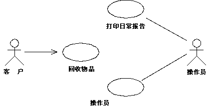
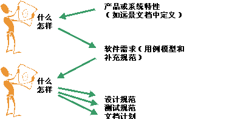
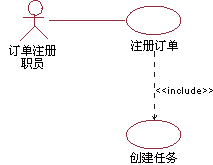
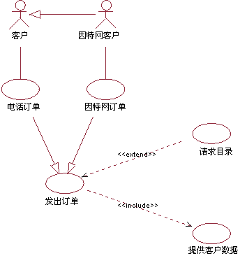
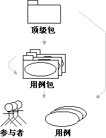

| 指南：用例模型 |
 |
|
说明用例模型是关于系统预期功能及其环境的模型，并充当客户与开发人员之间的约定。 用例充当贯穿整个系统开发过程的统一线程。相同的用例模型是“需求”规程的结果，并用作“分析与设计”规程和“测试”规程的输入。 下图显示了回收机器系统的用例模型的一部分。  用例图，显示具有参与者和用例的用例模型示例。 对系统建模的方法有多种，每种方法都可能针对一种不同的用途。但是，用例模型最重要的用途是将系统的行为传达给客户或用户。因此，模型必须易于理解。 用户和可与该系统交互的任何其他系统是参与者。因为参与者代表系统用户，所以它们有助于为系统定界并更明确地描绘出系统应该做什么。用例是根据参与者的需要而开发的。这就确保系统最终将符合用户的预期目标。 用例模型如何发展通过将客户和潜在用户的需求用作至关重要的信息，就可以找到参与者和用例。找到它们后，应简短描述用例和参与者。详细描述用例之前，应由客户检查用例模型，以验证所有用例和参与者都已找到，并且它们合起来就可满足客户需要。 在迭代开发环境中，将选择要在每次迭代中详细描述的一个用例子集。另请参阅任务：划分用例的优先级。 找到参与者和用例后，详细描述每个用例的事件流。这些描述显示系统如何与参与者交互以及系统在每个用例中的行为。 最后，检查已完成的用例模型（包括用例描述），而开发人员和客户使用该模型就系统应执行的操作达成一致。 避免功能分解用例模型退化而导致系统功能分解是很常见的。要避免这种情况，请注意以下症状：
要避免功能分解，应确保用例模型有助于回答像这样的问题：
非功能需求很容易发现，用例是获取系统功能需求的一种极好方法。但是非功能需求怎么办呢？非功能需求有哪些以及在何处获取呢？ 非功能需求通常分为可用性、可靠性、性能和可替换性需求（另请参阅概念：需求）。这些需求通常指定了符合任何法律和条例需求的需要。也可以是针对所用操作系统、平台环境、兼容性问题或任何适用的应用程序标准的设计约束。在通常情况下，您可以认为：不顾及多个设计选项的任何需求均应被视为设计约束。 许多非功能需求都适用于单个用例，并且是在该用例的属性中获取的。在该情况下，这些需求是在用例事件流中获取的，或是作为用例（请参阅指南：用例）的特殊需求获取的。 示例： 在回收机器系统中，特定于“返还堆积物项”用例的某个非功能需求可以是： 机器必须能够以 95% 以上的可靠性识别堆积物项。 非功能需求通常适用于整个系统。这样的需求是在补充规范中获取的（请参阅工作产品：补充规范）。 示例： 在回收机器系统中，适用于整个系统的某个非功能需求可以是： 机器一次将只允许一个用户。 什么／如何两难境况学习如何确定用例应该在怎样具体的情况下“开始和结束”是一件比较困难的事情。在何处启动特性和开始用例，以及在何处结束用例和开始设计？我们经常说，用例或软件需求应说明系统做“什么”，而不是“如何”做。请考虑下图：  一个人的终点是另一个人的起点。 根据个人背景，您可以使用不同的环境来确定您对“什么”以及“如何”的理解。 在确定是否应将某一具体情况排除在用例模型之外时，需要考虑这个问题。 具体用例和抽象用例之间存在差别。具体用例由参与者发起，并构成完整的事件流。“完整”表示用例的实例会执行参与者所要求的全部操作。 抽象用例本身从不实例化。抽象用例包含在（请参阅指南：包含关系），扩展到（请参阅指南：扩展关系）或泛化到（请参阅工作产品指南：用例泛化关系）其他用例中。当发起某一具体用例时，即创建该用例的一个实例。该实例还展示由其关联的抽象用例指定的行为。因此，没有从抽象用例创建任何单独的实例。 两种用例之间的区别是很重要的，因为参与者将在系统中“看到”并启动的是具体用例。 通过用斜体撰写用例名称，来表明该用例是抽象用例。 示例： 用例“创建任务”包含在用例“注册订单”中。“创建任务”是抽象用例。 在库处理系统中，抽象用例“创建任务”是包含在用例“注册订单”中的。在发起“注册订单”时，即创建“注册订单”的一个实例，该实例除遵循“注册订单”的事件流外，还遵循所包含的用例“创建任务”中描述的事件流。“创建任务”从不自行执行，它始终作为“注册订单”（或包含它的任何其他用例）的一部分。因此，“创建任务”是抽象用例。 构造用例模型构造用例模型有三个主要原因：
但构造并不是您的当务之急。只有在更多地了解用例行为（而不是一句简短的描述）之后，您才知道如何构造用例。您应当至少已确立了用例事件流的分步概括，以确保您的决策是以充分准确地了解行为为基础的。 要构造用例，有三种关系。您将使用这些关系分解用例段，这些用例段可在其他用例中重用，或者是该用例的专门化或可选方案。表示修改的用例被称为附加用例。 被修改的用例被称为基本用例。
可以使用参与者泛化关系来显示参与者相互之间是如何专门化的。另请参阅指南：参与者泛化关系。 示例： 对订单管理系统考虑部分用例模型。 将普通客户与 Internet 客户相分离是有用的，因为它们的属性略有不同。 但由于 Internet 客户展示客户的所有属性，因此可以说，Internet 客户是客户的一种专门化情况（以参与者泛化关系表示）。 此图中的具体用例是“电话订单”（由客户参与者发起）和“因特网订单”（由因特网客户发起）。这些用例都是更通用的“下订单”用例（在本例中该用例是抽象用例）的变体。“请求目录”用例表示可选的行为分段，不属于“下订单”的主要用途。该用例已分解成为抽象用例，以简化“下订单”用例。“提供客户数据”用例表示已分解的行为分段，因为它是只影响“下订单”用例的单独功能。“提供客户数据”用例还可由其他用例重用。在本例中，“请求目录”和“提供客户数据”都是抽象用例。  该用例图显示订单管理系统的用例模型的一部分。 下表显示三种不同的用例关系之间的更详细比较结果：
为了更易理解而组织用例模型的另一种情况是将用例合到包中。可以将用例模型组织成具有层次结构的用例包，其中“叶子”是参与者或用例。另请参阅指南：用例包。  该图显示用例模型层次结构。箭头表示可能的所有权。 用例始终与参与者相关吗？执行每个用例包括与一个或多个参与者通信。用例实例始终由要求系统执行操作的参与者启动。这表示每个用例均应与参与者有通信关联。使用该规则的原因是强制系统只提供用户需要的功能。 如果存在无人请求的用例，则表示用例模型或需求中有错误。 不过，该规则也有一些例外：
调查描述用例模型的调查描述应：
示例： 以下是回收机器的用例模型的调查描述样例： 该模型包含三个参与者和三个用例。主要用例是“回收物项”，它表示回收机器的主要用途。 起支持作用的用例是：
|
© Copyright IBM Corp. 1987, 2006. All Rights Reserved. |